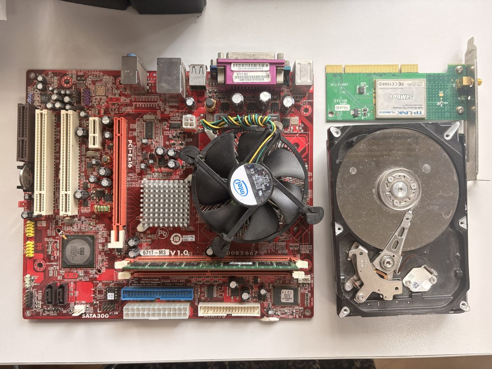
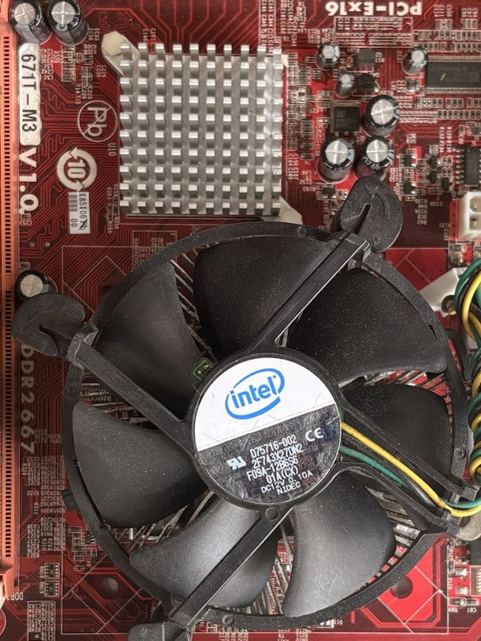

1
Input, output, process or storage?
Sort each part into the right group. (Drag, or click a card then click a box.)
Choose the lab for today's lesson. Screenshot your finished tasks for your portfolio. Finished early? Every lab has a Challenge zone. Every lab ends with a fill-the-gaps plenary.
Revising for the end of unit test? Use the Hardware Revision website.
What is really inside a computer? Sort the parts, label a motherboard, and find out what each part does.
Sort each part into the right group. (Drag, or click a card then click a box.)
A real computer, taken apart. The big red board is the motherboard. Drag each label to the right number (1 to 6). (Hint: the CPU is hidden under its fan. The GPU is built in, under the metal fins of the heatsink. RAM sticks are long and thin.)

123456The CPU gets very hot, so it is hidden under a fan (a cooler). What does it look like? Press the button to take the fan off.

Choose the job of each part.
Finished the tasks? These are harder. Try as many as you can, and screenshot the ones you finish.
An embedded system is a small computer inside another device that does one job. A general-purpose computer can do lots of different jobs.
Look at the red numbers 7 to 10 on the photo.
Choose the missing keyword for each sentence, then press Check. Screenshot your score for your portfolio.
The CPU (Central Processing Unit) is the brain of the computer. It follows instructions, one at a time, very, very fast.
The CPU has several parts. Drag each part to its job. (Drag, or click a card then click a box.)
Put the steps of the CPU's cycle in order. (Drag, or click a card then click a box.)
Meet Wolf CPU: a tiny computer with 10 memory boxes. Watch it fetch, decode and execute one instruction at a time.
| Instruction | What it does |
|---|---|
| LOAD N | Copy the number in box N into the accumulator |
| ADD N | Add the number in box N to the accumulator |
| SUB N | Subtract the number in box N from the accumulator |
| STORE N | Copy the accumulator into box N |
| OUTPUT | Show the number in the accumulator |
| JUMP N | Go to box N for the next instruction |
| IFZERO N | If the accumulator is 0, go to box N |
| STOP | End the program |
Each tick of the CPU's clock is one step. Clock speed is measured in hertz (Hz): ticks per second. How fast can YOU tick? Tap the button as fast as you can for 10 seconds.
Build a calculator in Microsoft MakeCode for micro:bit (New Project). It runs in the simulator: you don't need a real micro:bit.
Input (buttons) → Process (the ALU adds) → Output (the LEDs). Extra: can you make it subtract or multiply?
Finished the tasks? These are harder. Try as many as you can, and screenshot the ones you finish.
Write your own program: add the numbers in boxes 7, 8 and 9 and output the answer.
Make Wolf CPU count down: 3, 2, 1. You will need a loop (JUMP) and a test (IFZERO).
A program has a bug. Find it and fix it.
A CPU with 4 cores is like a kitchen with 4 chefs. Some jobs can be shared between chefs. Some jobs must be done in order, one step after another.
Ready for the real thing? Little Man Computer is used at GCSE and A-level. It works like Wolf CPU, with short codes: LDA = LOAD, STA = STORE, INP = input, OUT = output, HLT = STOP.
INP
STA FIRST
INP
ADD FIRST
OUT
HLT
FIRST DAT
Your challenge: change the program so that it subtracts the second number from the first. Screenshot it working.
Choose the missing keyword for each sentence, then press Check. Screenshot your score for your portfolio.
The CPU needs somewhere to keep the programs and data it is using. That is memory: RAM, ROM and cache.
Is each sentence about RAM or ROM?
What happens when you switch on a computer? Put the steps in order. (Drag, or click a card then click a box.)
This laptop has 8 GB of RAM. The operating system always uses 2 GB. Open apps until the RAM is full. What happens?
Virtual memory (on the storage drive: much slower)
The power goes off suddenly. Is each thing saved or lost?
Finished the tasks? These are harder. Try as many as you can, and screenshot the ones you finish.
Put these in order, from the fastest (and smallest) to the slowest (and biggest). (Drag, or click a card then click a box.)
Use the stretch keywords: virtual memory, firmware.
Read the facts, then answer.
Source: Tom's Hardware, July 2026. Baht prices are rough.
Choose the missing keyword for each sentence, then press Check. Screenshot your score for your portfolio.
RAM forgets everything when the power goes off. Secondary storage keeps your files safe for years.
Sort each storage device into the right group. (Drag, or click a card then click a box.)
Put the units in order, from the smallest to the largest. Each one is about 1,000 times bigger than the one before (except bit → byte: 1 byte = 8 bits). (Drag, or click a card then click a box.)
Think about speed, capacity, cost and durability (how tough it is).
Choose the best storage for each client.
Finished the tasks? These are harder. Try as many as you can, and screenshot the ones you finish.
Use: 1 GB = 1,000 MB and 1 TB = 1,000 GB.
Choose the storage and the best reason.
What is happening inside each kind of storage?
Choose the missing keyword for each sentence, then press Check. Screenshot your score for your portfolio.
The cloud is not in the sky. It is someone else's computer: a server in a data centre that you reach over the internet.
Is each file stored in the cloud (on a server you reach over the internet) or in local storage (on your own device)?
You press play on a video. Put its journey in order. (Drag, or click a card then click a box.)
Sort these into advantages and disadvantages of cloud storage. (Drag, or click a card then click a box.)
Finished the tasks? These are harder. Try as many as you can, and screenshot the ones you finish.
Bandwidth is how much data travels each second. 1 byte = 8 bits, so 1 GB = 8,000 megabits.
Some things use both!
Use the stretch keyword: data security.
Choose the missing keyword for each sentence, then press Check. Screenshot your score for your portfolio.
Every video, cloud file and AI chat runs in a data centre. What is inside them, and should Thailand build more?
Drag each part of a data centre to its job. (Drag, or click a card then click a box.)
A CPU is like a few very clever chefs. A GPU is like thousands of helpers who all do the same simple job at the same time.
Read the fact file, then answer.
Sources: DCD / IEA · Mongabay / Eco-Business, March 2026 · TechRepublic, September 2026
Sort each point. A balanced opinion looks at both sides. (Drag, or click a card then click a box.)
Should Thailand keep building more data centres? Think about individuals, companies and the government.
Sentence starters: I think… because… · On the other hand… · The most important point is… · Companies should… · The government should…
Your view and reasons are added to your results card below.
Finished the tasks? These are harder. Try as many as you can, and screenshot the ones you finish.
Who should do each thing: individuals, companies or the government? (Drag, or click a card then click a box.)
Use the fact file.
Which side does each piece of evidence support? Then choose the most balanced conclusion.
Choose the missing keyword for each sentence, then press Check. Screenshot your score for your portfolio.
Time to put it all together. Be a computer shop: choose the right specification for each client and their budget.
Choose a client. Read what they need. Pick the parts, keep to the budget, then press Check with client. Every computer also needs a base kit (case, motherboard, power supply and cooler): 6,000 ฿.
Prices are rough, in baht (late 2026). Real prices change, and RAM has become very expensive because AI data centres are buying so much of it.
Pick one client. Explain your build using keywords: specification, budget, performance, trade-off (and bottleneck or compatibility for stretch).
Sentence starters: I chose… because… · This gives better performance for… · The trade-off was… · To stay within the budget I…
Your explanation is added to your results card below.
Finished the tasks? These are harder. Try as many as you can, and screenshot the ones you finish.
A huge budget, but huge needs. Can you build a machine-learning computer?
Same needs, less money: 38,000 ฿. What will you give up?
Each computer has one part that holds the rest back: the bottleneck. Find it.
Choose the missing keyword for each sentence, then press Check. Screenshot your score for your portfolio.